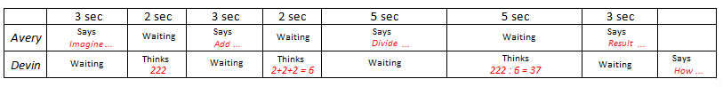
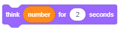

Nizanje koraka¶

U prethodnoj lekciji ste naučili o naredbama za kretanje, a sada ćete se baviti novim naredbama u grupama Izgledi i događaji. Pokazat ćemo da povezivanjem naredbi sa skriptama postavljamo ponašanje likova. Projekti u ovoj lekciji sastoje se od skripti u kojima se koraci slijede jedan za drugim. Kažemo da takve skripte imaju jednostavnu strukturu linija.
The Terminology and the Visual Grammar of the Scratch Language
Likovi mogu izvršiti više od 100 naredbi. Blokovi koji odgovaraju naredbama tvore vokabular jezika Scratch, a pravila po kojima su oni povezani u cijelosti odgovaraju gramatici jezika. Blokovi su pohranjeni u paleti blokova i raspoređeni su u 10 skupina različitih boja:
|
|
|
|
|
 Motion,
Motion, Sound,
Sound, Sensing,
Sensing, My Blocks
My Blocks Extensions.
Extensions.Blokovi su grupirani kako bi programerima olakšali navigaciju prilikom stvaranja skripti. Bez obzira koliko je složeno ponašanje likova, scenarij koji ga opisuje sastoji se od niza elementarnih operacija ovih 10 vrsta. Ako znate vrstu radnje koju bi lik trebao učiniti, lako možete odabrati pravu grupu i izdvojiti potreban blok.
Postoje samostalni i funkcionalni blokovi.
Samostalni blokovi odgovaraju jezičnim naredbama, tj. Koracima algoritma. Neki od njih imaju polja u koja se može postaviti vrijednost.
Funkcijski blokovi blokirjau povratne vrijednosti. Ne mogu stajati sami u skripti, već se umeću u blokove blokova koji primaju vrijednosti i određuju svoje radnje.
Blokovi su dizajnirani tako da se mogu povezati samo oni koji mogu oblikovati ispravne konstrukcije jezika, odnosno Scratch ima vizualnu gramatiku koja ne dopušta da nastanu sintakse.

Samostalni blokovi
Blokovi koji odgovaraju fazama obrade nazivat će se blokovi snopa. Svaki blok snopa odgovara jednoj radnji, odnosno odgovoru na pitanje ŠTO. Na primjer, blok
naređuje liku da ide naprijed 10 koraka. Oblik ovog bloka podsjeća na Lego kocku, a cijela skripta kao kocka sklopljena u snop.
Zadani broj koraka se upisuje u bijeli kružić – ulazno polje bloka.
U blok
jedno ulazno polje ima oblik zaobljenog pravokutnika, a drugo kruga. Pravokutni ulazi prihvaćaju i tekstualne i brojne, a kružni samo brojne vrijednosti.
Blok
ima čak tri ulaza.
Neki blokovi imaju šesterokutno ulazno polje, na primjer upravljački blok
. Oni prihvaćaju logičke vrijednosti (točno ili netočno).
U Control skupini postoje blokovi u obliku slova C, koje nazivamo **C-blokovima*. Utor unutar C bloka je posebna vrsta ulaza koji skriptu prima kao ulaz. Blok
ima dva ulaza, jedan za broj i jedan za skriptu.
Postoji i jedan kontrolni blok E-oblika koji ima tri ulaza, jedan za uvjet (logička vrijednost) i dva za skripte. Od ova dva ulaza skripte, prvi pita što učiniti ako se uvjet ispuni, a drugi pita što učiniti ako uvjet nije ispunjen.
Početni blokovi (blokovi šešira) odgovaraju početnom koraku algoritma. Odgovaraju na pitanje KADA bi se scenarij trebao pokrenuti. Ova vrsta blokova ima zaobljeni vrh i postavlja se na vrh snopa, a povezuje se s naknadnim blokovima pomoću ispupčenja na dnu. Početni blokovi definiraju koji se događaj treba dogoditi kako bi se izveo snop blokova ispod njih. Taj bi događaj mogao biti, na primjer, klikom na zelenu tipku zastave ili pritiskom na tipkovnicu.
Završni blokovi odgovaraju završnom koraku algoritma. Imaju udubljenje na vrhu, ali nemaju ispupčenje na dnu. Budući da se više skripti koje se mogu paralelno izvesti može biti vezano za jedan objekt, krajnji blok može prekinuti izvršenje svih pokrenutih skripti.
Function blocks
Funkcijski blokovi pohranjuju podatke za ostale blokove. Često ih nazivaju reporteri jer informiraju o trenutnoj vrijednosti varijable. Reporteri blokova koji zadrže trenutne koordinate i orijentaciju znakova predstavljeni su u prethodnom poglavlju. Na primjer, pojedini reporteri s blokova imaju ulazna polja kružnog ili pravokutnog oblika poput i
.
Logički blokovi blokovi pohranjuju logičke vrijednosti (true ili false). Imaju oblik šesterokuta i mogu se postaviti samo u ulazna polja odgovarajućeg oblika (šesterokutna ili pravokutna). Takav je blok
. Na Scratchu se složeni logički uvjeti mogu lako izgraditi umetanjem logičkih blokova u ulazna polja drugih logičkih blokova.
Funkcije blokova iz grupe Izgledi i događaji Blokovi iz grupe Motion s kojima smo se susreli u prethodnoj lekciji mogli su se primijeniti samo na likove. Za razliku od njih, blokove Looks (Izgledi) možete koristiti i za kontrolu izgleda likova i za upravljanje pozadinama ili scenskim nastupima. Ali to se ne odnosi na sve blokove ove grupe. Među njima su oni koji se odnose samo na likove i oni koji se odnose samo na pozornicu. Blokovi u grupi Događanja pokreću izvršavanje skripte
U prethodnim lekcijama već smo učili o učincima nekih blokova poput Izgleda i Događaji, na primjer, reci i pritisnite tipku. U ovoj ćemo lekciji detaljnije predstaviti blokove koji omogućuju jednostavnu animaciju s primjenom ugrađenih grafičkih efekata i proširiti vokabular Scratch pomoću novih naredbi.
 Prouči sljedeće primjere projekta¶
Prouči sljedeće primjere projekta¶
Društvo možemo zabaviti pričajući viceve, ali i matematičkim trikovima. Sljedeći projekt ilustrira jedan od njih. Ima samo jednu jednostavnu skriptu retka strukture.
Primjer 1 – Projekt “Math Trick”¶
Korak 1: Zamislite troznamenkasti broj čiji su svi brojevi jednaki, npr. 111, 222.
Korak 2: zbrojite sve znamenke tog broja.
Korak 3: Podijelite troznamenkasti broj prema dobivenom zbroju.
Korak 4: Rezultat je broj 37.
Scenariji ovg projekta je sasvim jednostava. Lik naredbama zadaje korisniku prva tri zahtjeva, a naredbom  priopćava rezultat
priopćava rezultat
Koristit ćemo lik Avery girl iz biblioteke likova koji ima dva kostima (kliknite karticu Kostimi da biste ih vidjeli) i između svaka dva zahtjeva odredite promjenu kostima pomoću naredbe  .
.
Kako bi korisnik imao vremena izračunati što se od njega traži u prve dvije naredbe stavićemo da je tekst koji izgovara lik vidljiv 3 sekunde, a u trećoj 5 sekundi. Naredba ostavlja posljednji tekst na ekranu dok ne zaustavimo izvršavanje programa klikom na oznaku stop - crveni osmerokut iznad gornjeg desnog ugla pozornice.
Scenarij ovog projekta prikazan je na sljedećoj slici.

Primjer 2 – Projekt “Conversation”¶
Ovaj je projekt nadogradnja projekta “Math Trick”. U njoj djevojčica Avery i dječak Devin predstavljaju isti matematički trik kroz razgovor u kojem Devin “zamisli” broj 222 i izvrši potrebne proračune, te na kraju pita: “Kako ste pogodili?”. Ponašanje obaju likova određeno je skriptama strukture slobodnih linija. Kako bi izgledalo kao da stvarno razgovaraju, popisu čekanja treba dodati scenarij za djevojčicu dok dječak razmišlja, a dječakov scenarij za čekanje dok djevojka postavlja pitanja.
Sljedeća slika prikazuje scenarij projekta.

Dizajn projekta
 Otvorite projekt Math Trick.
Otvorite projekt Math Trick.
 Spremite ovaj projekt pod novim nazivom Razgovor.
Spremite ovaj projekt pod novim nazivom Razgovor.
Savjet. Kada kreirate novu verziju projekta, spremite pod promijenjenim imenom na samom početku. Na taj način nećete izgubiti staru verziju.
 Iz biblioteke likova odaberite dječaka Devina.
Iz biblioteke likova odaberite dječaka Devina.
 Dječaka postavite na desni rub pozornice i u znakovima promijenite orijentaciju na -90 tako da gleda prema djevojčici.
Dječaka postavite na desni rub pozornice i u znakovima promijenite orijentaciju na -90 tako da gleda prema djevojčici.
 Priložite sljedeće skripte likovima.
Priložite sljedeće skripte likovima.
{kind=link}
U projektu Math Trick djevojka izgovara 4 rečenice i mijenja kostim 3 puta (postoje 2 kostima). To znači da se u dva uzastopna izvođenja projekta djevojčica u početku neće pojaviti u istom kostimu. Kako bi se djevojka predstavila na isti način (da se pojavi u prvom kostimu) pri svakoj izvedbi projekta, na početku scenarija dodali smo odgovarajuću naredbu.
Savjet. Na početak projekta stavite naredbe koje inicijaliziraju likove (odredite gdje se i u kostimu trebaju pojaviti), posebno ako se likovi kreću tijekom projekta.
Usklađivanje ponašanja znakova postigli smo umetanjem naredbi čekanja u skripte oba znaka.
{kind=link}
 Spremite izmjenjen projekt.
Spremite izmjenjen projekt.
Ako želite odgovoriti na dječakovo pitanje “Kako ste pogodili?”, Kliknite gumb Prikaži upute
Upustva:
Djevojku je zamolio da smisli troznamenkasti broj s istim znamenkama. Označimo znamenku koja se ponavlja s x. Tada je imaginarni broj jednak 111x, a zbroj znamenki je 3x. Rezultat operacije dijeljenja broja na zbroj njegovih znamenki jednak je 111/3 = 37, bez obzira na zamišljeni broj.
Primjer 3 – “Projekt Calculation”¶
I sljedeći je projekt nadogradnja prethodnog. U njemu, umjesto fiksnog broja 222, dječak zamisli proizvoljni troznamenkasti broj sa sve tri jednake znamenke i na njemu izvršava potrebne operacije. To možemo programirati zahvaljujući sposobnosti generiranja slučajnog broja iz određenog intervala.
Generiranje slučajnih brojeva
U grupi blokova Operacije nalazi se naredba  . Stvaranje slučajnog broja znači slučajnim odabirom broja iz intervala. Najmanji i maksimalni broj ovog intervala naveden je u poljima ovog izvjestitelja. Dakle, ako su brojevi 1 i 10, odabrao bi se bilo koji broj iz intervala [1,10], a na primjer, ako je -100 i 100, tada bi se generirao neki broj iz intervala [-100,100].
. Stvaranje slučajnog broja znači slučajnim odabirom broja iz intervala. Najmanji i maksimalni broj ovog intervala naveden je u poljima ovog izvjestitelja. Dakle, ako su brojevi 1 i 10, odabrao bi se bilo koji broj iz intervala [1,10], a na primjer, ako je -100 i 100, tada bi se generirao neki broj iz intervala [-100,100].
U našem primjeru prvo polje treba upisati broj 1, a drugo broj 9.
U ovom su projektu korištene varijable koje ćemo upoznati tek u osmoj lekciji. Zbog toga je označen kao težak. Možete ga preskočiti, pa mu se vratite kasnije.
Ako volite izazove, recimo nešto unaprijed. Pod varijablom mislimo na područje računalne memorije u kojem program pohranjuje trenutne vrijednosti podataka s kojima radi. Naziv varijable je naziv područja, a vrijednost varijable je ono što je pohranjeno u tom području.
Izrada projekta

Otvorite projekt Razgovor i spremite ga pod novim nazivom Proračun.
Napravite varijablu x koja odgovara znamenkama troznamenkastog broja i dodijelite slučajni broj iz intervala [1,9] kao početnu vrijednost.
Napravite varijabilni broj i dodijelite vrijednost 111 * x kao početnu vrijednost.
U prvi blok skripte Think Boy postavljen je izvjestitelj s promjenjivim brojem umjesto 222.
 

Napravite varijabilni zbroj i dodijelite vrijednost izraza x + x + x kao njegove početne vrijednosti. Budući da zbirni blok ima samo 2 ulazna polja, umetnut ćemo jedan blok dodavanja u polje drugog bloka dodavanja. (Naravno, mi bismo to mogli učiniti i s jednim blokom za množenje, jer je x + x + x = 3 * x)

U drugi blok skripte Think Boy smjestio se izvjestitelj s promjenjivom sumom umjesto teksta 2 + 2 + 2.
 Stvorite varijablu rezultata i dodijelite vrijednost broja / zbroja izraza kao njegove početne vrijednosti.
Stvorite varijablu rezultata i dodijelite vrijednost broja / zbroja izraza kao njegove početne vrijednosti.
 U trećem bloku scenarija razmišljanja, zamjenjivač varijable rezultata zamjenjuje se brojem 37.
U trećem bloku scenarija razmišljanja, zamjenjivač varijable rezultata zamjenjuje se brojem 37.
 Izvršite projekt više puta kako biste provjerili da li on stvara različite troznamenkaste brojeve.
Izvršite projekt više puta kako biste provjerili da li on stvara različite troznamenkaste brojeve.
 Sjetite se projekta tako modificiranog.
Sjetite se projekta tako modificiranog.
Primjer 4 – Projekt “Spitite Effects”¶
Sljedeći projekt ilustrira kako naredba  iz grupe Looks može utjecati na prikaz likova. Također pokazuje blok događaja kada se klikne ovaj lik može pokrenuti skriptu.
iz grupe Looks može utjecati na prikaz likova. Također pokazuje blok događaja kada se klikne ovaj lik može pokrenuti skriptu.
Project Script
Na pozornici je 7 primjeraka istog lika. Klikom na jedan od njih mijenja se lik koristeći jedan od sedam grafičkih efekata. To je omogućeno naredbom . Lik također izgovara o kojem se efektu radi.
By clicking on the white triangle in the input field you will open the drop-down list containing the following 7 different effects.

Izrada projekta
Započni novi projekt
Obriši lik mačka i iz biblioteke likova izaberi Singer1
Liku pridruži sljedeću skriptu
{kind=link}
Sada desnim klikom na znak na popisu znakova otvorite izbornik prečaca i odaberite opciju duplikata. Popis znakova prikazat će Singer2, kojem će se pridružiti isti scenarij kao i lik iz kojeg je stvoren.
Promjenite učinak u naredbi fisheye, a u naredbi prepravi tekst u fisheye.
Ponovi ovu operaciju još 5 puta i svaki put izmjeni efekt i poruku koju lik priopćava kada se klikne na njega.
Ravnomjerno rasporedite likove na pozornici i provjerite radi li projekt ono što se namjeravalo klikom na svaki od likova.
Svaki put kada kliknete na isti lik, odgovarajući učinak će se povećavati.
Stoga treba u fazu dodati skriptu koja će pritiskom na zelenu zastavicu po naredbi poništiti promjene 
Sljedeća slika prikazuje izgled znakova nakon jedne ili više primjena odgovarajućeg efekta

Primjer 5 – Projekt “Stage Effects”¶
Za razliku od blokova iz grupe Motion, blokovi iz grupe Looks mogu se primijeniti i na pozornicu. Na sceni su pridružene sve skripte ovog projekta. Svrha projekta je prikazati kako naredba može utjecati na izgled vaše pozadine i dati vam ideje tako da ih sami možete koristiti u svojim projektima. Da bi se sve vratilo u normalu, događaj kada se klikne zelena zastava povezan je sa brisanjem svih grafičkih efekata.
Projektni scenarij
Mačka je usred pustinje. Korisnik može promijeniti izgled pozadine pritiskom na jednu od tipki s brojevima od 1 do 3. Svaki od tih događaja odgovara jednom od grafičkih efekata u pozadini. Sljedeća slika pokazuje kako izgleda pozornica na početku (0) i nakon nekoliko pritiska utrke: 1 - efekt boje, 2 - efekt ribljeg oka, 3 - vrtložni učinak i 4 - pikselatni učinak.

 Odgovori na sljedeća pitanja¶
Odgovori na sljedeća pitanja¶
Pitanje 1¶
Q-66: Koji od blokova pripada grupi Looks? (Izaberi sve točne odgovore) (Select all correct answers)

Pitanje 2¶
Q-67: Koji od blokova pripadaju grupi Events? (Izaberi sve točne odgovore)

Pitanje 3¶
Q-68: Koji od blokova pripada grupi Control? (Izaberi sve točne odgovore)

Pitanje 4¶
- da
- ne
- Točno.
Q-69: Može li jedna skripta imati više početnih blokova?
Pitanje 5¶
- reporter blocks
- stack blocks
- Točno.
- hat blocks
- cap blocks
Q-70: Kojoj vrsti pripadaju blokovi koji imaju udubljenje na gornjoj i ispučenje na donjoj strani.
Pitanje 6¶
- reporter blocks
- Točno.
- stack blocks
- hat blocks
- C-blocks
Q-71: Kojoj vrsti pripadaju blokovi kaoji čuvaju vrijednost i ne mogu stajati samostalno u skripti, već se stavljaju u ulazna polja drugih blokova.
Pitanje 7¶
-
Q-72: Upari oblik blokova s njihovom ulogom u Scratchu.
Pokušaj ponovo
- hat
- define WHEN the script will run
- reporters
- hold values
- C-blocks
- receive the script as input
- stack blocks
- define WHAT should be done
Pitanje 8¶
- da
- ne
- Točno.
Q-73: Imaju li izrazi  i
i  istu vrijednost?
istu vrijednost?
Pitanje 9¶
- nijedan
- Netočno. Drugi ima vrijednost 10/(-1)=-10
- prvi
- Netočno. Prvi ima vrijednost 5-3=2
- drugi
- Točno.
- oba
- Netočno. Prvi ima vrijednost 2.
Q-74: Koji od izraza  i
i  imaju negativnu vrijednost?
imaju negativnu vrijednost?
Pitanje 10¶
Kolika je vrijednost izraza  ?
?
Pitanje 11¶
- 45
- Netočno. 5+(2*(7-4)) = 5+2*3 = 5+6 = 11
- 11
- Točno.
- 15
- Netočno. 5+(2*(7-4)) = 5+2*3 = 5+6 = 11
Q-75: Kolika je vrijednost izraza  ?
?
Pitanje 12¶
- 3
- Netočno. ((2+1)*(9-5))/2 = 3*4/2 = 6
- 11
- Netočno. ((2+1)*(9-5))/2 = 3*4/2 = 6
- 6
- Točno.
Q-76: Kolika je vrijednost izraza  ?
?
 Pokušaj!¶
Pokušaj!¶
Vježba 1- Uvećanje¶
Napravite projekt koji omogućuje liku na pozornici da se povećava i smanji. Uvećanje bi trebalo pokrenuti strelicom gore, a smanjenje sa strelicom za dolje*. Provjerite je li lik vratio svoju prirodnu veličinu klikom na zelenu zastavu.
Uputstvo:
Liku treba dodati sljedeće skripte:: 
Vježba 2 – Okretanje¶
Pored mačjeg lika, prenesite još dva lika iz biblioteke likova: djevojčicu Avery i dječaka Devina. Djevojku postavite s lijeve strane, a dječaka s desne strane mačke. Napravite projekt koji omogućuje mački na pozornici da skrene lijevo prema djevojci, a desno prema dječaku. Okretanje ulijevo trebalo bi pokrenuti utrku s lijevom strelicom, a skretanje desno s desnom strelicom. Pazite da se mačka ne okrene naopako kada se okrene ulijevo.
Uputstva:
Liku mačke treba dodati sljedeće skripte:: 
Vježba 3 – Promjena boje pozadine¶
Napravite projekt koji omogućava pozadini da promijeni boju nakon svakog klika na pozornici. Koristi se efektom boje kako bi se osiguralo da klikom na zelenu zastavu uklone grafičke efekte.
Uputstvo:
Pozornici treba sljedeće skripte:: 
Vježba 4 – Kodiranje aritmetičkog izraza sa zagradama (1)¶
Na Scratchu se formira aritmetički izraz koji odgovara sljedećem matematičkom izrazu: (5 * (5 + 4)) - (2 * (2 + 3)). Postavljanjem odgovarajućeg izvještača u polje za unos naredbe say, provjerite da li ste dobili njegovu ispravnu vrijednost: (5 * (5 + 4)) - (2 * (2 + 3)) = 5 * 9-2 * 5 = 45-10 = 35.
Uputstvo:

Vježba 5 – Kodiranje aritmetičkog izraza sa zagradama (2)¶
Na Scratchu oblikujte aritmetički izraz koji odgovara sljedećem matematičkom izrazu: (8 / (4-2)) * (8- (6/2)) Postavljanjem odgovarajućeg izvjestitelja u polje unosa naredbe say, provjerite da li ste dobili njegovu ispravnu vrijednost: (8 / ( 4-2)) * (8- (6/2)) = 8/2 * (8-3) = 4 * 5 = 20.
Odgovor:

 Ispravi greške!¶
Ispravi greške!¶
Greška 1¶
- Pitanje
Je li sljedeći razgovor dobro sinkroniziran?

Odgovor:
Nije dobro postavljeno vrijeme. Instrukcije wait i say trebaju imati isto vrijeme da bi razgovor bio dobro sinkroniziran.
Greška 2¶
- Pitanje
Učenik voli sve raditi po pravilima i zato želi da svakom program dodaje i naredbu za zaustavljanje programa. Tako je in a kraju skripte za projekt Math Trick postavio naredbu
 . Međutim, takst posljednje naredbe nije bio vidljiv. Kako će učenik to ispraviti, a da na kraju ipak ostane naredba koja ga zaaustavlja?
. Međutim, takst posljednje naredbe nije bio vidljiv. Kako će učenik to ispraviti, a da na kraju ipak ostane naredba koja ga zaaustavlja?

Odgovor:
Naredba say the result is 37 trenutno se izvršava i odmah slijedi naredba stop all, tako da praktično ne uspijevamo vidjeti učinak naredbe say. Stoga ovu naredbu treba zamijeniti naredbom say__for__seconds i postaviti na prikaz na primjer 5 sekundi.
Greška 3¶
- Pitanje
Učenik želi da se njegov lik rotira kada pritisnemo tipku razmaknica. Ali lik se ne okreće. Učemu je greška?
{kind=link}
Odgovor:
Lik se vrti, ali prebrzo, brzinom kojom računalo izvršava naredbe, pa ga ljudsko oko ne može vidjeti. Da biste vidjeli zaokret lika, naredbe za čekanje moraju biti smještene između naredbi
turn right, recimo u desetini sekunde. Na ovaj način moći ćemo pratiti okret lika.
 Što smo naučili¶
Što smo naučili¶
U ovoj lekciji upoznali smo se sa skupinama i blokovima iz palete blokova kojima su dane naredbe programskog jezika Scratcha. Scratch vizualni rječnik sadrži više od 100 blokova podijeljenih u 10 skupina. Vizualna gramatika Scratcha ostvaruje se kroz oblik blokova: ne dopušta povezivanje blokova čije funkcije nisu primjerene. Samostalni blokovi povezani su u skripte koje specificiraju ponašanje objekata i funkcionalno postavljaju potrebne vrijednosti za njih.
Scratch projekti: 3Studio
Novi pojmovi: events, actions, arithmetic operators, random numbers, linear structure of the script.
Nove naredbe:  -
-  ,
,  ;
;  -
-  , ;
, ;
 -
-  , , , ,
, , , ,  ,
,  ;
;
 - , ,
- , ,  ,
,  , ;
, ;  -
- 
 .
.
Napomena. Naredbe označene znakom * biti će u narednim lekcijama.
 Napravi neki od sljedećih projekta¶
Napravi neki od sljedećih projekta¶
Projekt 1 – “Genije”¶
Napravite ovaj projekt po uzoru na Math Trick.
Započnite novi projekt koji ćete nazvati Genije. Odaberite glavni lik iz biblioteke likova i pozadinu iz biblioteke pozadina. Lik treba postaviti sljedeće zadatke.
“Zamislite bilo koji troznamenkasti broj.”
“Ako usporedimo njegove brojeve od većih i manjih, to je prvo.”
“Usporedba njegovih brojeva od manjih i većih je drugi broj.”
“Oduzmi drugi broj od prvog.”
“Upamtite rezultat, a zatim prebacite njegove brojeve.”
“Dodajte taj broj rezultatu kojeg pamtite.”
“Dobio si broj 1089.”
Projekt 2 – “Čokoladni kola蔶
Započnite novi projekt koji ćete nazvati Choco Cake. To bi trebala biti animacija u kojoj kuhar objašnjava recept (algoritam) za izradu čokoladnih kolačića.
Za ovu animaciju trebat će vam sljedeći znakovi: kuhar, jaja, brašno, šećer, čokolada, zdjela, mikser, štednjak, kolačići. Pronađite prave slike na računalu ili Internetu i prilagodite ih vašem projektu (očistite pozadinu, povećajte, umanjite …).
Ona se brine za sinkronizaciju skripte za svaki znak umetanjem naredbe trajanja čekanja. Jedini lik koji cijelo vrijeme treba biti na pozornici je kuhar. Čita recept (algoritam) i utvrđuje pojavu i nestanak drugih znakova.
Kuhar je sam na pozornici. Kaže: “Evo ALGORITMA za pravljenje kolača!” (2 sekunde)
Kuhar izgovara sljedeće: “Uzmi jaja, brašno, šećer i čokoladu.” U tom se trenutku na pozornici pojavljuju jaja, brašno, šećer i čokolada. Prizor traje 2 sekunde.
Kuhar kaže: “Stavite sve u zdjelu i pomiješajte mikserom.” U tom trenutku jaja, brašno, šećer i čokolada nestaju s pozornice, a pojavljuju se posuda i mikser. Prizor traje 2 sekunde.
Kuhar kaže: “Stavite posudu u vruću pećnicu.” U tom trenutku zdjela i mikser nestaju s pozornice i pojavljuje se pećnica. Prizor traje 2 sekunde.
Kuhar kaže: “Pecite tortu pola sata.” Na pozornici se ništa ne mijenja. Prizor traje 2 sekunde.
Kuhar izgovara sljedeće: “Poslužite kolačiće.” U tom trenutku peć nestaje sa pozornice i pojavljuju se kolači. Prizor traje 2 sekunde.